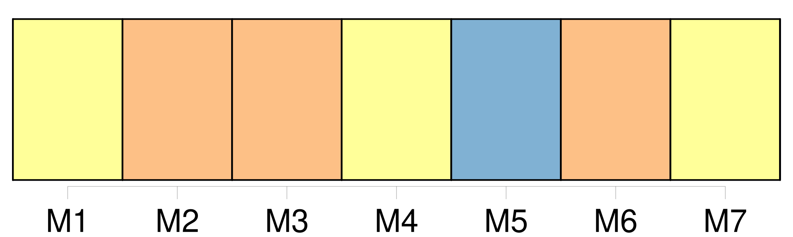
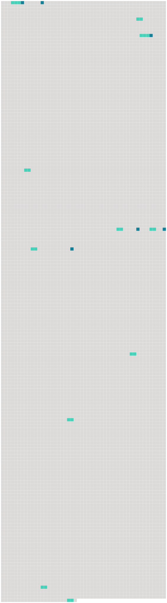

Longueur nb maillons : 17 mentions |
 |
Il parla de [la sapinière voisine] [où] l'espace était grand, [où] il y avait un ruisseau dans lequel on pouvait se baigner et un étang dans lequel on pouvait pêcher. [11 phrases]
» [13 phrases] Dans [cette grande sapinière] [où] les chemins tracés étaient rares, les trois amis eurent la chance de ne pas être vus. [85 phrases]
Et c'est ainsi qu'il pouvait apprendre à sa petite camarade que sa mère était morte en la mettant au monde et que son père, fou de chagrin, s'était sauvé de la maison pour aller se noyer dans l'étang de [la sapinière] [49 phrases] Elle souleva le rideau et fut tout étonnée de découvrir [la sapinière] si proche. On [la] voyait bien, [la sapinière] On [la] voyait sur une grande étendue, et, tout là-bas, les arbres, par places, se mettaient en rang comme les petites filles à l'école. [13 phrases]
Et Douce, qui s'était tout d'abord inquiétée de la venue d'un chasseur, avait été rassurée par Noël : Papa seul a le droit d' [y] chasser. [86 phrases] N'avait -elle pas fait à peu près le même, maintes et maintes fois, sur le tronc lisse du bouleau que Noël avait jeté par-dessus le large fossé qui coupait en deux [la sapinière] ?? [48 phrases] Souvent mère Clarisse les accompagnait dans [la sapinière] [118 phrases] Pour rentrer plus vite, Églantine prend le chemin de [la sapinière] [9 phrases] Elle sait que Noël va la guetter dans [la sapinière] |
 |
Il est possible de télécharger la ressource sur la page Ortolang |
Si vous avez des questions ou vous voyez des erreurs, merci d'envoyer un mail à silvia.federzoni89@gmail.com |